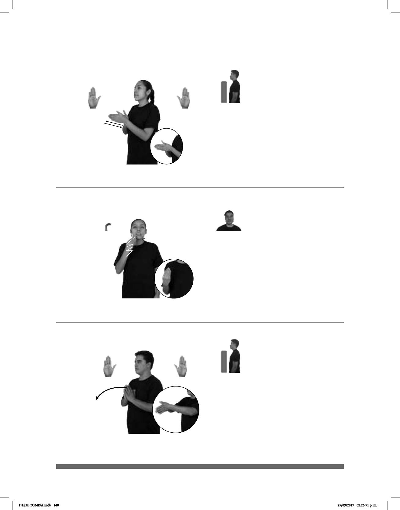

148
Seña: SS
B-P.2
Las palmas se
encuentran frente a frente.
A la altura del pecho.
Los brazos se
mueven formando un arco hacia
enfrente.
Simula la acción
de lanzarse al agua.
sust. m. Salto al agua
desde un lugar elevado o desde un
trampolín.
(B-P 114)
__muy
pro-YO CLAVADO HÁBIL pro-YO
Soy muy bueno para los clavados.
(B-P 112)
_muy
pos-MI ABUELO+MUJER HACER RICO CHOCOLATE
Mi abuela hace un chocolate muy rico.
Seña: SB
MD y MB B-P.2
Las palmas se encuentran
frente a frente.
A la altura del pecho.
MD y MB recto hacia
enfrente alternada y repetidamente.
Simula la acción de
usar un molinillo.
sust. m. Producto hecho
con granos de cacao tostados y molidos
a los que generalmente se añade leche,
azúcar y canela o vainilla.
Seña: SM
B-P.4
Palma hacia adentro.
De la barbilla al pecho.
La mano sigue una
trayectoria ondulada.
: La mandíbula se
desplaza de derecha a izquierda
repetidamente.
: 1. adj. Torcido, ladeado. 2.
sust. m. Falta de las cualidades o de las
características que debe tener alguna
cosa o alguna persona.
(B-P 113)
1
2
pos-MI HERMANO
estatura
TENER DIENTES
plural
CHUECO
Mi hermanito tiene los dientes chuecos.
DLSM COMISA.indb 148 25/09/2017 02:26:51 p. m.